Documentation
Script Reference
Forum
Documentation
Script Reference
Forum
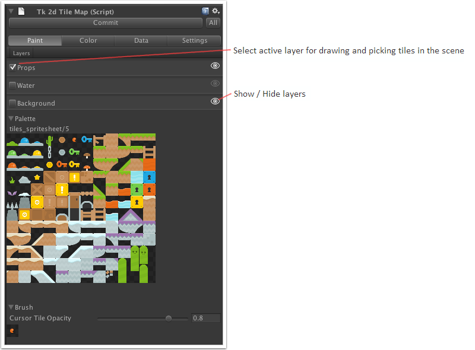
Palette - The tile palette. Use this to create a brush by selecting one or more tiles.
Brush - A preview of the brush that will be used to draw tiles into the tilemap.
Cursor Tile Opacity - Opacity of the brush preview at the location tiles will be drawn. Adjusting this can help with visualizing tile placement.
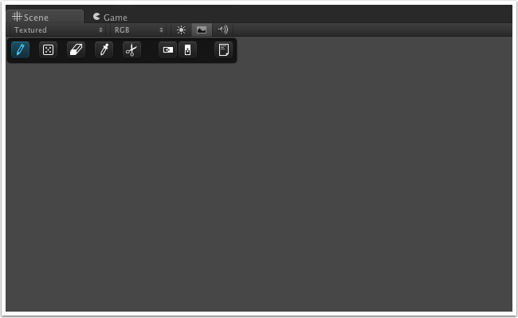paintsceneview">
Icons from left to right:
Draw - Draw tile brush onto the tilemap. Single-click to splat the brush, dragging a rectangle will repeat the brush.
Draw Random - Draws using random tiles from the brush. You can also drag a rectangle to splat brush tiles randomly.
Erase - Click or drag to erase tiles.
Eyedropper - Select a region from the tilemap to use as the current brush.
Cut - Same as eyedropper, but also erases the region.
Flip Horizontal - The tile brush used to paint is flipped horizontally.
Flip Vertical - Flip tile brush vertically.
Scratchpad - Open / Close Scratchpad.
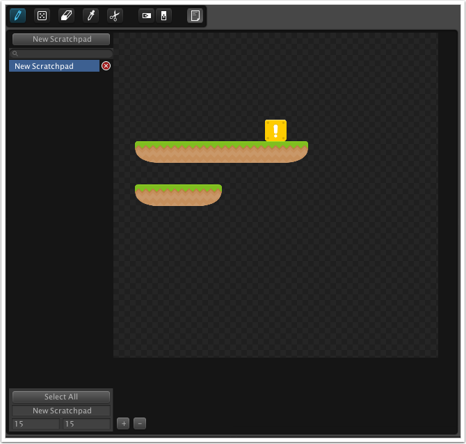
A scratchpad is used like a mini tilemap where you can store different pre-built tile configurations, then pick them up later on to use on your scene.
You can have as many scratchpads as you like. It's a good idea to give them names so you can quickly navigate to the one you want using the filtered search.
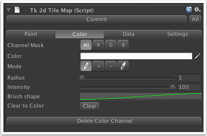
Channel Mask - Affect all or only one color channel while painting color.
Color - Set color to paint with.
Mode - Normal color paint, Add color value, Subtract color value, Pick color.
Radius - Color brush radius. Can also be changed using '[' and ']' when painting.
Intensity - Intensity (opacity) of brush.
Brush shape - A customizable curve for the falloff (how the brush fades out away from center).
Clear to Color - Sets the entire color channel to the selected color.
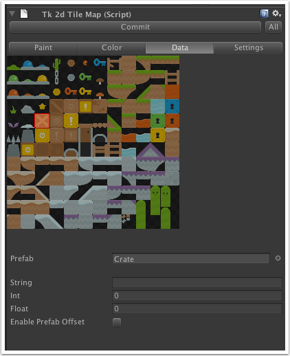
Each type of tile can have data associated with it.
Prefab - The prefab will be spawned for each of these tiles in the tilemap.
String Int Float - Data associated with this type, that can be read from the tilemap.
Enable Prefab Offset - Enable this to keep the prefab position as a local offset from the tile.
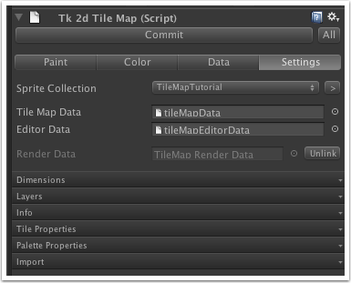
Sprite Collection - The sprite collection the tilemap uses
Tile Map Data - tk2dTileMapData object for the tilemap
Editor Data - tk2dTileMapEditorData object for the tilemap
Render Data - GameObject with the actual render data
Unlink - Unlink the render objects from the tilemap. New ones will be created upon Commit.
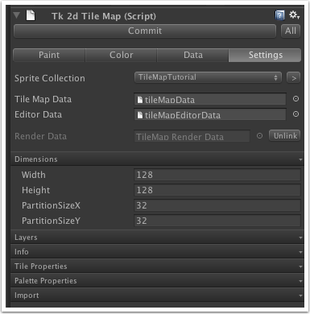settingsdims">
Width - Number of tiles horizontally
Height - Number of tiles vertically
PartitionSizeX - Number of tiles horizontally in a Chunk
PartitionSizeY - Number of tiles vertically in a Chunk
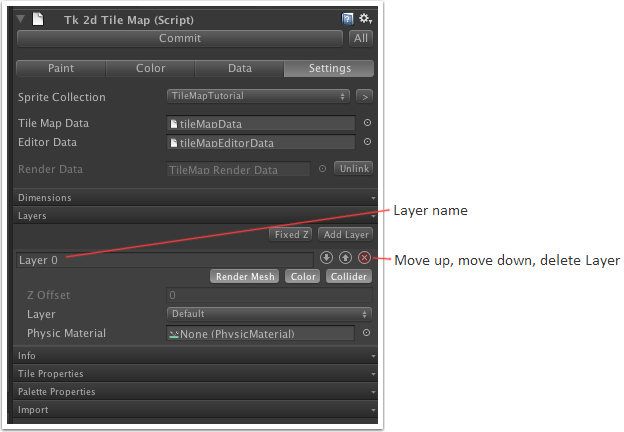settingslayers">
Fixed Z - If enabled, Z position of layers is set to 'Z Value'. Otherwise layer Z positions are specified as an offset from the previous layer.
Render Mesh - Enabled if the layer should have render data when tilemap is Committed. (e.g. disable if the layer should only be used as collider)
Color - Layer uses color channel
Collider - Enabled if the layer should have a collider mesh when tilemap is Committed.
Z Offset / Z Value - Z position, or offset from previous layer.
Layer - Unity Layer of the tilemap layer.
Physic Material - Unity PhysicMaterial of the tilemap layer.
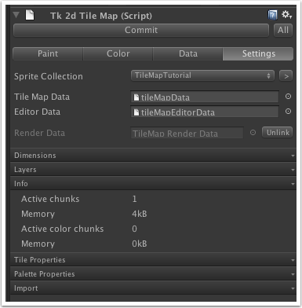settingsinfo">
Active chunks, Memory - Number of non-empty chunks. Internal tile data memory usage.
Active color chunks, Memory - Number of chunks with color data. Internal color data memory usage.
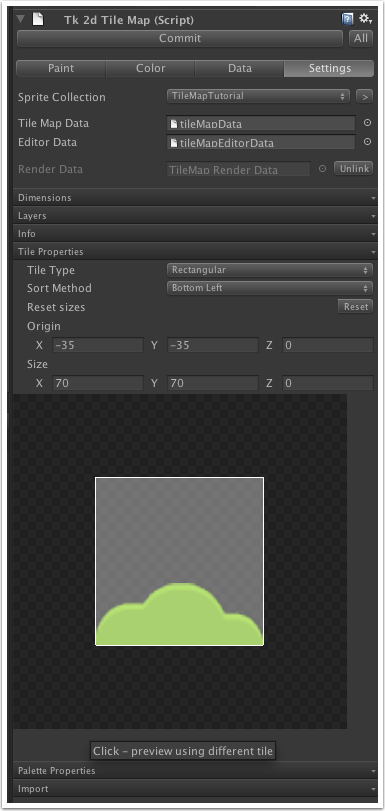settingstile_props">
Tile Type - Rectangular or Isometric tiles. (Isometric mode is still in beta)
Sort Method - Set the order in which tiles are drawn. Useful when tiles have overlapping regions.
Reset sizes - Guesses the Origin and Size using information from the sprite collection.
Origin and Size - Set the tile offset and area in relation to a sprite. Use the preview in the area below to align the tile shape with an image from the sprite collection.
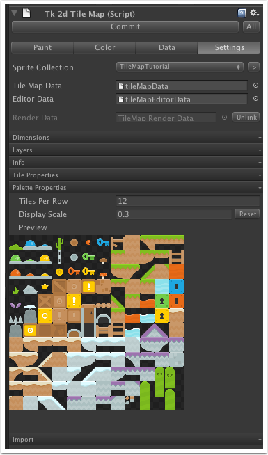settingspalette_props">
Tiles Per Row / Display Scale - Adjust how the grid of tiles is shown in the palette.
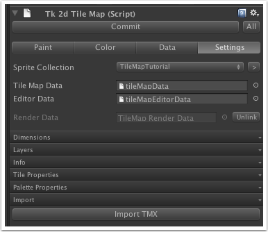settingsimport">
Import TMX - Import "Tiled TMX"